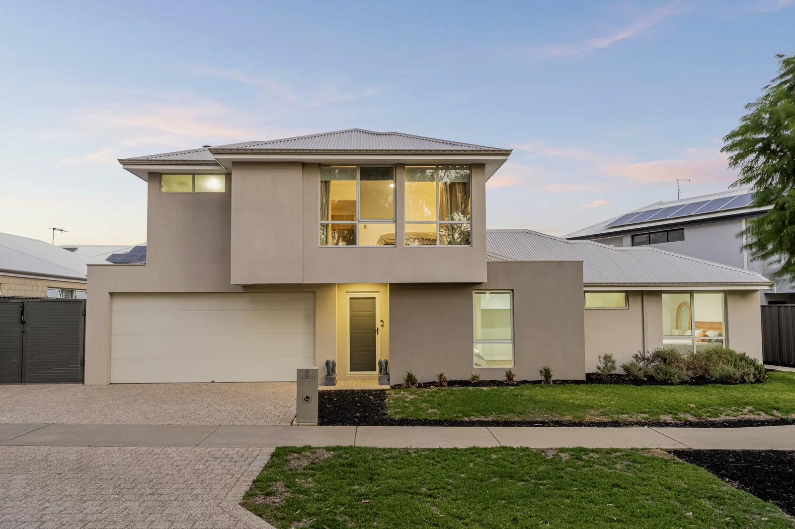
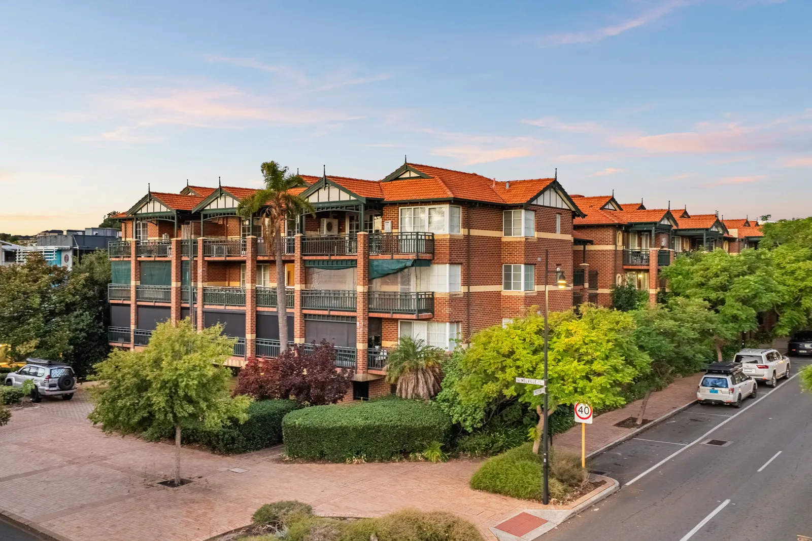

Perth twilight property photography
Twilight & Day-to-Dusk Photography Perth
The most under-used shot in Perth real estate. Real golden-hour twilight from $75 as an add-on, or a digital day-to-dusk conversion from $1.50 an image.
Twilight photography in Perth costs $75 as an add-on to a Baker Production photography booking, shot at golden hour with the interior lights on. A digital day-to-dusk conversion of an existing daytime photo starts at $1.50 per image through Baker Studio. A combined Day to Night video is $650. All prices include GST and enhanced images are clearly disclosed.
The one shot that makes a listing look expensive
Twilight is the most under-used service in Perth real estate media. Almost every agency will happily pay for drone; very few book the golden-hour exterior, even on homes where it would obviously carry the campaign. The result is that a twilight lead image still stands out in a portal search, which is exactly what you want it to do.
It works because it does two things at once. The sky gives you colour that daytime cannot — and Perth skies at dusk are genuinely good. And the interior lights turn the house into something warm and occupied rather than a set of empty rooms. West-facing rear elevations, pools, alfresco areas and anything with a river or ocean outlook all photograph completely differently in that window.
If the budget will not stretch to a second visit, a day-to-dusk conversion through Baker Studio gets you most of the way for a fraction of it — rendered in minutes, from $1.50 an image, and clearly marked as enhanced.
Two ways to get a twilight image
Pick by budget and by how much the property deserves it.
- Shot twilight, $75 add-on — a real golden-hour visit
- Interior lights on, warm and occupied
- Best for pools, alfresco, west-facing rears and coastal outlooks
- Day-to-dusk, from $1.50/image — digital conversion
- Rendered in minutes through Baker Studio
- Works on any existing daytime exterior
- Every enhanced image carries a clear disclosure
- Day to Night video, $650, combines both in one edit
Twilight and day-to-dusk work



More recent work in the Baker Production gallery.
What it costs
| Service | Price (inc. GST) |
|---|---|
| Twilight Add-OnGolden-hour exterior shots. Added to an existing photography booking. | $75 |
| Day to Dusk (Baker Studio)Digital conversion of an existing daytime exterior. Rendered in minutes. | from $1.50/image |
| Day to Dusk (added to a shoot)We handle the conversion for you as part of the booking. | $5/image |
| Day to Night VideoCombined day and twilight video, 45–90 seconds. 90 minutes on site. | $650 |
| Elite ListingTwilight photos, floor plan, drone, day & night video, virtual tour, social reel. | $1,299 |
All prices include GST. Prices last checked 24 August 2026. Baker Studio self-serve rates and shoot add-on rates differ — see the pricing page.
Next day. Guaranteed.
Photography, drone and floor plans are delivered the next day, every time. Video takes two days because of the edit. That is not a best-effort promise buried in the terms — it is the standard on every booking.
- Photography — next day
- Drone and aerial — next day
- Floor plans — next day
- Video — two days
- Virtual staging via Baker Studio — minutes
- Need it sooner? Ask. We usually find a way.
Where we shoot
Baker Production covers the Perth metropolitan area — from Alkimos in the north to Rockingham in the south, the coast through to the Perth Hills. Travel inside that area is included in the price.
Outside that range — Mandurah, Peel, the South West, regional WA — call 0466 789 522 and ask. We travel for the right job.
Twilight photography in Perth — common questions
Give the listing a twilight lead image.
$75 added to a booking for a real golden-hour visit, or from $1.50 an image for a digital day-to-dusk conversion.